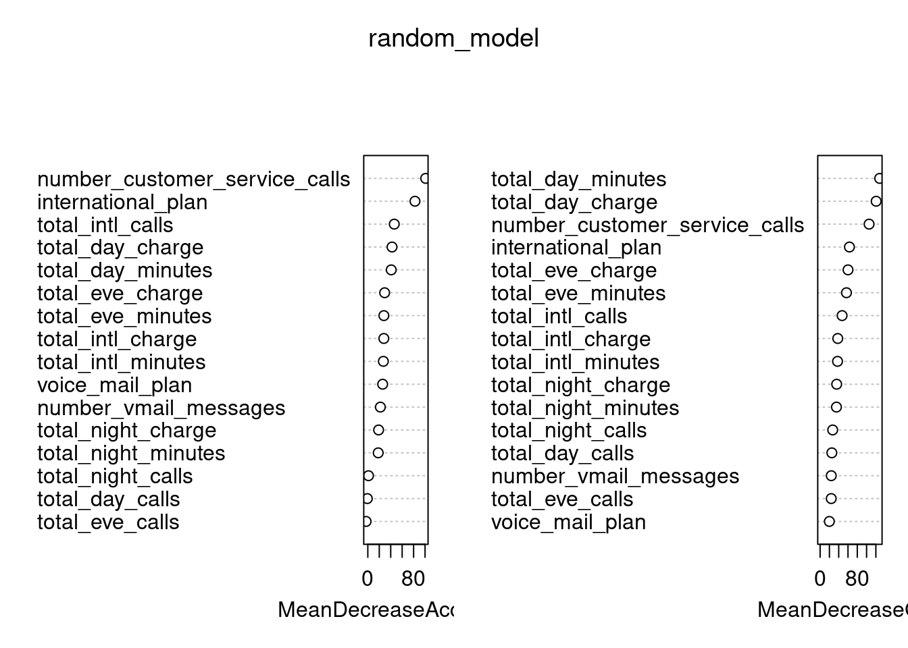

Chapter 8 决策树及其组合方法
Decision Tree: A decision tree is a decision support tool that uses a tree-like graph or model of decisions and their possible consequences, including chance event outcomes, resource costs, and utility.
Decision trees are produced by algorithms that identify various ways of splitting a data set into branch-like segments. These segments form an inverted decision tree that originates with a root node at the top of the tree.
8.2 实例
#####
# importing churn data set from .csv file
data1 <-read.csv("./data/chun_data.csv",header= TRUE,sep=",")
#as the first three columns of the data arent important for the prediction we drop those columns from the data frame
# drop the variables from the data set
data1<-data1[-c(1,2,3)]
#data exploration
#gives the dimensions of the data set
dim(data1)## [1] 5000 17#gives the names of the variables in the data set
names(data1)## [1] "international_plan" "voice_mail_plan"
## [3] "number_vmail_messages" "total_day_minutes"
## [5] "total_day_calls" "total_day_charge"
## [7] "total_eve_minutes" "total_eve_calls"
## [9] "total_eve_charge" "total_night_minutes"
## [11] "total_night_calls" "total_night_charge"
## [13] "total_intl_minutes" "total_intl_calls"
## [15] "total_intl_charge" "number_customer_service_calls"
## [17] "churn"#displays top 10 observations of the data set
head(data1)## international_plan voice_mail_plan number_vmail_messages total_day_minutes
## 1 no yes 25 265.1
## 2 no yes 26 161.6
## 3 no no 0 243.4
## 4 yes no 0 299.4
## 5 yes no 0 166.7
## 6 yes no 0 223.4
## total_day_calls total_day_charge total_eve_minutes total_eve_calls
## 1 110 45.07 197.4 99
## 2 123 27.47 195.5 103
## 3 114 41.38 121.2 110
## 4 71 50.90 61.9 88
## 5 113 28.34 148.3 122
## 6 98 37.98 220.6 101
## total_eve_charge total_night_minutes total_night_calls total_night_charge
## 1 16.78 244.7 91 11.01
## 2 16.62 254.4 103 11.45
## 3 10.30 162.6 104 7.32
## 4 5.26 196.9 89 8.86
## 5 12.61 186.9 121 8.41
## 6 18.75 203.9 118 9.18
## total_intl_minutes total_intl_calls total_intl_charge
## 1 10.0 3 2.70
## 2 13.7 3 3.70
## 3 12.2 5 3.29
## 4 6.6 7 1.78
## 5 10.1 3 2.73
## 6 6.3 6 1.70
## number_customer_service_calls churn
## 1 1 no
## 2 1 no
## 3 0 no
## 4 2 no
## 5 3 no
## 6 0 no#displays bottom top 10 observations of the data set
tail(data1)## international_plan voice_mail_plan number_vmail_messages total_day_minutes
## 4995 no no 0 170.7
## 4996 no yes 40 235.7
## 4997 no no 0 184.2
## 4998 no no 0 140.6
## 4999 no no 0 188.8
## 5000 no yes 34 129.4
## total_day_calls total_day_charge total_eve_minutes total_eve_calls
## 4995 101 29.02 193.1 126
## 4996 127 40.07 223.0 126
## 4997 90 31.31 256.8 73
## 4998 89 23.90 172.8 128
## 4999 67 32.10 171.7 92
## 5000 102 22.00 267.1 104
## total_eve_charge total_night_minutes total_night_calls total_night_charge
## 4995 16.41 129.1 104 5.81
## 4996 18.96 297.5 116 13.39
## 4997 21.83 213.6 113 9.61
## 4998 14.69 212.4 97 9.56
## 4999 14.59 224.4 89 10.10
## 5000 22.70 154.8 100 6.97
## total_intl_minutes total_intl_calls total_intl_charge
## 4995 6.9 7 1.86
## 4996 9.9 5 2.67
## 4997 14.7 2 3.97
## 4998 13.6 4 3.67
## 4999 8.5 6 2.30
## 5000 9.3 16 2.51
## number_customer_service_calls churn
## 4995 1 no
## 4996 2 no
## 4997 3 yes
## 4998 1 no
## 4999 0 no
## 5000 0 no#displays structure of the variables in the data set
str(data1)## 'data.frame': 5000 obs. of 17 variables:
## $ international_plan : chr "no" "no" "no" "yes" ...
## $ voice_mail_plan : chr "yes" "yes" "no" "no" ...
## $ number_vmail_messages : int 25 26 0 0 0 0 24 0 0 37 ...
## $ total_day_minutes : num 265 162 243 299 167 ...
## $ total_day_calls : int 110 123 114 71 113 98 88 79 97 84 ...
## $ total_day_charge : num 45.1 27.5 41.4 50.9 28.3 ...
## $ total_eve_minutes : num 197.4 195.5 121.2 61.9 148.3 ...
## $ total_eve_calls : int 99 103 110 88 122 101 108 94 80 111 ...
## $ total_eve_charge : num 16.78 16.62 10.3 5.26 12.61 ...
## $ total_night_minutes : num 245 254 163 197 187 ...
## $ total_night_calls : int 91 103 104 89 121 118 118 96 90 97 ...
## $ total_night_charge : num 11.01 11.45 7.32 8.86 8.41 ...
## $ total_intl_minutes : num 10 13.7 12.2 6.6 10.1 6.3 7.5 7.1 8.7 11.2 ...
## $ total_intl_calls : int 3 3 5 7 3 6 7 6 4 5 ...
## $ total_intl_charge : num 2.7 3.7 3.29 1.78 2.73 1.7 2.03 1.92 2.35 3.02 ...
## $ number_customer_service_calls: int 1 1 0 2 3 0 3 0 1 0 ...
## $ churn : chr "no" "no" "no" "no" ...#gives the summary of the variables of the data set
summary(data1)## international_plan voice_mail_plan number_vmail_messages total_day_minutes
## Length:5000 Length:5000 Min. : 0.000 Min. : 0.0
## Class :character Class :character 1st Qu.: 0.000 1st Qu.:143.7
## Mode :character Mode :character Median : 0.000 Median :180.1
## Mean : 7.755 Mean :180.3
## 3rd Qu.:17.000 3rd Qu.:216.2
## Max. :52.000 Max. :351.5
## total_day_calls total_day_charge total_eve_minutes total_eve_calls
## Min. : 0 Min. : 0.00 Min. : 0.0 Min. : 0.0
## 1st Qu.: 87 1st Qu.:24.43 1st Qu.:166.4 1st Qu.: 87.0
## Median :100 Median :30.62 Median :201.0 Median :100.0
## Mean :100 Mean :30.65 Mean :200.6 Mean :100.2
## 3rd Qu.:113 3rd Qu.:36.75 3rd Qu.:234.1 3rd Qu.:114.0
## Max. :165 Max. :59.76 Max. :363.7 Max. :170.0
## total_eve_charge total_night_minutes total_night_calls total_night_charge
## Min. : 0.00 Min. : 0.0 Min. : 0.00 Min. : 0.000
## 1st Qu.:14.14 1st Qu.:166.9 1st Qu.: 87.00 1st Qu.: 7.510
## Median :17.09 Median :200.4 Median :100.00 Median : 9.020
## Mean :17.05 Mean :200.4 Mean : 99.92 Mean : 9.018
## 3rd Qu.:19.90 3rd Qu.:234.7 3rd Qu.:113.00 3rd Qu.:10.560
## Max. :30.91 Max. :395.0 Max. :175.00 Max. :17.770
## total_intl_minutes total_intl_calls total_intl_charge
## Min. : 0.00 Min. : 0.000 Min. :0.000
## 1st Qu.: 8.50 1st Qu.: 3.000 1st Qu.:2.300
## Median :10.30 Median : 4.000 Median :2.780
## Mean :10.26 Mean : 4.435 Mean :2.771
## 3rd Qu.:12.00 3rd Qu.: 6.000 3rd Qu.:3.240
## Max. :20.00 Max. :20.000 Max. :5.400
## number_customer_service_calls churn
## Min. :0.00 Length:5000
## 1st Qu.:1.00 Class :character
## Median :1.00 Mode :character
## Mean :1.57
## 3rd Qu.:2.00
## Max. :9.00#library for the sample.split function
library(caTools)
#splitting the data into training and testing data
# sample the input data with 70% for training and 30% for testing
data1$churn <- factor(data1$churn)
sample <- sample.split(data1$churn,SplitRatio=0.70)
trainData <- subset(data1,sample==TRUE)
testData <- subset(data1,sample==FALSE)
#rpart --- recursive partitioning decision tree
library(rpart)
#TO BUILD DECISON TREE BY USING RPART PACKAGE(recursive partitioning decision tree)
churn_model<- rpart(churn ~ .,data=trainData)
churn_model## n= 3500
##
## node), split, n, loss, yval, (yprob)
## * denotes terminal node
##
## 1) root 3500 495 no (0.85857143 0.14142857)
## 2) total_day_minutes< 264.65 3286 363 no (0.88953135 0.11046865)
## 4) number_customer_service_calls< 3.5 3014 227 no (0.92468480 0.07531520)
## 8) international_plan=no 2747 134 no (0.95121951 0.04878049)
## 16) total_day_minutes< 232.7 2446 75 no (0.96933769 0.03066231) *
## 17) total_day_minutes>=232.7 301 59 no (0.80398671 0.19601329)
## 34) total_eve_minutes< 242.35 240 22 no (0.90833333 0.09166667) *
## 35) total_eve_minutes>=242.35 61 24 yes (0.39344262 0.60655738)
## 70) voice_mail_plan=yes 14 0 no (1.00000000 0.00000000) *
## 71) voice_mail_plan=no 47 10 yes (0.21276596 0.78723404) *
## 9) international_plan=yes 267 93 no (0.65168539 0.34831461)
## 18) total_intl_minutes< 13.1 220 46 no (0.79090909 0.20909091)
## 36) total_intl_calls>=2.5 179 5 no (0.97206704 0.02793296) *
## 37) total_intl_calls< 2.5 41 0 yes (0.00000000 1.00000000) *
## 19) total_intl_minutes>=13.1 47 0 yes (0.00000000 1.00000000) *
## 5) number_customer_service_calls>=3.5 272 136 no (0.50000000 0.50000000)
## 10) total_day_minutes>=162.95 163 42 no (0.74233129 0.25766871)
## 20) total_eve_minutes>=141.45 142 28 no (0.80281690 0.19718310) *
## 21) total_eve_minutes< 141.45 21 7 yes (0.33333333 0.66666667) *
## 11) total_day_minutes< 162.95 109 15 yes (0.13761468 0.86238532) *
## 3) total_day_minutes>=264.65 214 82 yes (0.38317757 0.61682243)
## 6) voice_mail_plan=yes 51 6 no (0.88235294 0.11764706) *
## 7) voice_mail_plan=no 163 37 yes (0.22699387 0.77300613)
## 14) total_eve_minutes< 189.45 68 33 no (0.51470588 0.48529412)
## 28) total_day_minutes< 288.5 44 11 no (0.75000000 0.25000000) *
## 29) total_day_minutes>=288.5 24 2 yes (0.08333333 0.91666667) *
## 15) total_eve_minutes>=189.45 95 2 yes (0.02105263 0.97894737) *#to display it in diagram
library(rattle)## Loading required package: tibble## Loading required package: bitops## Rattle: A free graphical interface for data science with R.
## Version 5.5.1 Copyright (c) 2006-2021 Togaware Pty Ltd.
## Type 'rattle()' to shake, rattle, and roll your data.library(rpart.plot)
fancyRpartPlot(churn_model)
#predicting the model data based on the model built from training data set
pred<- predict(churn_model,testData,type = "class" )
pred## 4 5 6 7 10 13 15 16 17 23 27 31 32 35 36 37
## yes no no no no no yes yes no no no no no no no no
## 41 46 48 49 50 58 59 60 62 64 66 68 69 78 80 81
## no no no yes no no no no no no no no no yes no no
## 82 86 93 95 101 113 120 121 122 133 137 141 144 145 147 150
## no no no no yes yes no no no no no no no yes no no
## 168 175 176 177 184 188 195 196 197 198 206 211 213 214 215 223
## no no no no no yes no no no yes no no no no yes no
## 228 229 230 232 238 240 248 249 250 254 258 260 261 262 263 264
## no no no no no no no no no no no no no no no no
## 265 266 270 271 272 276 279 283 290 293 295 296 298 304 311 313
## no no no no no no no no yes no no no no no no no
## 314 315 316 319 320 324 325 327 328 330 331 337 339 343 344 354
## no no no no yes no no no no no no no yes no no no
## 356 357 358 368 370 373 374 376 378 380 381 387 394 395 396 402
## no no no no no yes no no no no no no no no no no
## 405 406 407 409 410 416 417 418 419 421 423 432 440 441 442 449
## no no no no no yes yes no no no no no no no no no
## 452 453 455 460 464 468 471 474 479 481 486 494 500 504 508 509
## no no yes no no no no yes no no no no no no no no
## 512 513 515 518 521 522 523 530 532 535 536 538 540 545 549 555
## no no no no no yes no no no yes no no no no no no
## 560 563 565 574 578 581 586 587 588 590 593 598 600 604 607 608
## no no no no no no no no no no no no no no no no
## 615 616 619 621 629 631 633 635 636 643 648 652 653 659 660 664
## no no no no no no no no yes no no no no no no no
## 667 678 682 685 689 691 695 696 698 700 702 704 711 715 716 717
## no no no no no no yes no no no no no no no yes no
## 721 722 723 730 733 734 752 755 757 759 760 761 762 767 768 772
## no yes no no yes no no no no no no no no yes no yes
## 775 778 781 784 785 790 794 805 815 816 818 832 834 837 840 844
## no no no no no no no no no yes no no no no no no
## 846 848 850 852 855 857 861 862 865 866 867 868 872 873 875 876
## no no no no no no no no no no no no yes no yes no
## 878 879 880 882 884 885 887 890 891 892 897 900 904 912 916 917
## yes no no no no no no no no no no no no yes no no
## 918 919 922 924 925 927 929 933 936 939 940 942 949 957 962 971
## no no no no no no no no no no no no no no no no
## 976 981 999 1000 1001 1003 1006 1007 1010 1018 1020 1021 1022 1026 1036 1038
## yes no no no yes no no no no no no no no no no no
## 1040 1047 1051 1060 1061 1062 1064 1067 1070 1075 1080 1082 1089 1090 1091 1092
## no no no no no no no no no no no no no no no no
## 1094 1096 1097 1101 1102 1107 1110 1113 1115 1116 1120 1129 1132 1139 1140 1149
## no yes no no no no no no no no no no no no no no
## 1156 1158 1161 1163 1167 1171 1172 1178 1180 1181 1197 1204 1205 1212 1213 1215
## yes no no no no no no no no no no no yes no no no
## 1217 1220 1224 1231 1234 1237 1245 1247 1248 1256 1257 1258 1261 1268 1271 1274
## no no no no no no no no no no no no no no no yes
## 1277 1281 1285 1291 1297 1300 1302 1307 1308 1310 1321 1322 1323 1325 1328 1331
## no no no no no yes no no no no no no yes no no no
## 1334 1338 1339 1342 1344 1346 1347 1351 1355 1356 1362 1364 1366 1367 1374 1379
## no yes no no no yes yes yes no no no no no no yes no
## 1381 1384 1390 1396 1400 1402 1409 1417 1418 1429 1432 1435 1436 1438 1441 1446
## no no no no no no no no no no no no yes no no no
## 1447 1451 1452 1455 1459 1464 1466 1467 1469 1470 1474 1475 1477 1482 1483 1490
## no no no no no no no no no no no no no no no no
## 1491 1503 1505 1507 1514 1519 1522 1524 1529 1530 1531 1533 1536 1537 1539 1541
## no no no no no no no no no no no no no no yes no
## 1547 1548 1550 1551 1552 1553 1554 1556 1558 1560 1561 1565 1570 1576 1584 1585
## no no no no no no no no no no no no no no no no
## 1587 1589 1592 1596 1600 1604 1605 1613 1615 1617 1621 1624 1626 1627 1628 1630
## no no no no no no no no yes no no no no no no no
## 1634 1641 1647 1649 1651 1653 1657 1661 1662 1664 1667 1671 1673 1675 1680 1690
## no no yes no no no no no no no no no no yes yes no
## 1691 1692 1693 1695 1696 1702 1706 1711 1717 1718 1719 1721 1722 1723 1726 1733
## no yes no yes no yes no no no no no no no no no no
## 1734 1739 1742 1743 1745 1746 1749 1757 1759 1763 1766 1773 1777 1782 1785 1787
## no no no no no no no no no no yes no no no yes no
## 1792 1794 1795 1797 1800 1804 1808 1810 1821 1826 1827 1828 1831 1838 1841 1842
## no no yes no no no no no no no no no yes yes no no
## 1843 1845 1846 1849 1857 1858 1867 1868 1869 1873 1876 1880 1882 1883 1884 1886
## yes yes yes no no no no no no no no no yes no no no
## 1892 1898 1899 1900 1905 1909 1910 1911 1917 1927 1929 1931 1932 1936 1945 1950
## no no yes no no no no no no no no no no yes no no
## 1951 1965 1967 1968 1969 1970 1974 1977 1981 1984 1985 1986 1989 1990 1993 1994
## yes no no no no no no no no no yes no no no no no
## 2004 2006 2011 2020 2022 2023 2028 2033 2034 2035 2038 2039 2041 2044 2045 2046
## no no no no no no no no no no no yes no no no no
## 2052 2056 2066 2069 2070 2073 2077 2079 2089 2093 2094 2095 2101 2104 2105 2107
## no no no no yes no no no no no no no no yes no yes
## 2110 2112 2118 2123 2124 2125 2129 2136 2138 2139 2140 2142 2151 2156 2157 2159
## no no no no no no no no no no no no no yes no yes
## 2160 2162 2164 2165 2167 2168 2170 2172 2173 2178 2179 2182 2183 2188 2192 2201
## no no no yes no no no no no no no no no no no no
## 2206 2208 2209 2229 2235 2237 2239 2245 2250 2251 2257 2262 2268 2269 2270 2275
## no no no no no no no no no no no no yes no no no
## 2280 2283 2285 2289 2296 2298 2301 2302 2304 2306 2308 2311 2312 2313 2317 2318
## no no no no no no no no no no no no no no no no
## 2320 2328 2329 2330 2333 2334 2336 2339 2341 2345 2348 2350 2353 2355 2359 2362
## no yes no no no no yes no no no yes no no yes no no
## 2365 2369 2374 2377 2379 2383 2385 2386 2389 2392 2395 2403 2404 2408 2411 2419
## no no no yes no no no no yes no no yes no yes no no
## 2427 2429 2432 2437 2446 2447 2457 2460 2466 2468 2469 2475 2478 2481 2482 2483
## no yes no no no no no no no no yes no no no no no
## 2486 2488 2490 2491 2494 2496 2498 2499 2504 2505 2510 2512 2520 2521 2522 2527
## no no no no yes no no no no no no no no no no yes
## 2529 2534 2546 2547 2550 2551 2554 2558 2569 2573 2576 2582 2585 2586 2589 2593
## no no no no no no no no no yes no yes no no no no
## 2597 2602 2618 2620 2622 2624 2625 2626 2633 2641 2642 2643 2646 2647 2650 2654
## no no no yes no no no no no no no no yes no no no
## 2657 2659 2661 2669 2671 2677 2679 2685 2690 2691 2694 2698 2701 2702 2703 2704
## no no yes no no no no no no no no no no no no no
## 2706 2709 2712 2714 2719 2721 2727 2730 2735 2740 2741 2750 2753 2754 2755 2756
## no yes no no no no no no no no no no no no no no
## 2758 2763 2764 2765 2766 2767 2768 2771 2772 2773 2775 2788 2789 2790 2793 2795
## no no no no no no no no no yes yes no yes no no no
## 2800 2808 2810 2811 2812 2813 2820 2825 2827 2829 2830 2836 2841 2844 2851 2853
## no no no no no no no yes no yes no no no no no no
## 2856 2861 2864 2867 2871 2874 2877 2883 2884 2886 2888 2898 2903 2914 2919 2921
## no no no no no no no yes no no no no no no no no
## 2922 2932 2938 2940 2942 2943 2945 2948 2952 2965 2971 2973 2975 2977 2982 2985
## no no no no no yes no yes no no no no no no no no
## 2988 2989 2995 2996 2997 2999 3005 3006 3008 3011 3012 3020 3025 3027 3028 3029
## yes no no no no no no no no no no no no no no no
## 3032 3035 3036 3047 3055 3059 3062 3068 3071 3073 3077 3078 3079 3085 3094 3096
## no no yes no no no no no no yes no no no no no no
## 3101 3105 3108 3112 3114 3115 3116 3120 3121 3122 3128 3131 3134 3151 3152 3161
## no no no no yes no no no no no yes no no no no no
## 3167 3169 3170 3171 3176 3177 3181 3182 3186 3191 3194 3195 3199 3201 3208 3209
## no no yes no no no no no no no no no no no no no
## 3210 3213 3221 3229 3232 3239 3243 3246 3247 3248 3249 3250 3253 3254 3256 3257
## yes no no no no yes no no yes yes no no no no no no
## 3260 3262 3264 3270 3275 3276 3285 3287 3288 3289 3292 3293 3295 3297 3302 3303
## no no no no no no no no yes no yes no no no yes no
## 3305 3307 3311 3312 3316 3317 3321 3322 3328 3329 3330 3336 3337 3338 3342 3343
## no no no no no no yes no no no no no no no no no
## 3347 3348 3349 3351 3356 3362 3374 3376 3379 3381 3387 3389 3396 3399 3402 3405
## no no no no no no yes no no no no no yes no no no
## 3416 3418 3420 3430 3431 3437 3440 3441 3443 3444 3450 3451 3454 3460 3464 3465
## no no no no no no no no yes no no no no no no no
## 3466 3467 3469 3473 3474 3476 3489 3491 3494 3495 3498 3499 3500 3503 3513 3514
## no no no no no no no no no yes no yes no no no no
## 3518 3523 3524 3525 3531 3532 3536 3539 3540 3543 3545 3549 3552 3554 3557 3571
## no no no no yes no no no no no no yes no no no no
## 3574 3584 3586 3587 3590 3602 3607 3610 3612 3616 3617 3620 3626 3627 3628 3631
## no no yes no no no no yes no no yes no no no no yes
## 3633 3635 3636 3637 3644 3647 3649 3651 3654 3657 3658 3659 3664 3669 3672 3677
## no no no no no no no no no yes no no no no no no
## 3679 3682 3684 3686 3687 3688 3696 3699 3704 3708 3713 3718 3722 3728 3729 3730
## no no no no yes no no no no no no yes no no no no
## 3733 3737 3740 3743 3746 3754 3758 3761 3762 3769 3770 3776 3780 3785 3786 3790
## no no no no no no no no no no no no no no no no
## 3793 3794 3796 3797 3798 3802 3809 3810 3815 3816 3819 3820 3821 3826 3831 3836
## no no no no no no no no no no no no no no no no
## 3841 3845 3846 3851 3852 3853 3854 3855 3858 3863 3864 3866 3872 3875 3877 3879
## no no no no yes yes no yes no no no no no no no no
## 3882 3886 3895 3898 3906 3907 3909 3914 3915 3916 3918 3921 3923 3931 3933 3934
## no no no no no no no no no no yes no no no no no
## 3937 3946 3948 3950 3954 3960 3963 3964 3967 3969 3970 3971 3975 3986 3987 3990
## no no no no no no no no yes no no no no no yes no
## 3991 3992 3993 3995 3996 3997 4002 4006 4013 4017 4021 4022 4024 4026 4030 4035
## no no no no no no no no no no no yes yes no no no
## 4036 4037 4045 4048 4049 4056 4059 4061 4065 4070 4071 4072 4074 4084 4089 4090
## no no no no no no no no no no no no no no no no
## 4091 4094 4097 4099 4101 4118 4119 4121 4124 4129 4130 4134 4137 4142 4144 4145
## no no no no no no no no no no no no no no no no
## 4146 4148 4151 4158 4162 4167 4168 4170 4172 4185 4190 4213 4218 4224 4225 4227
## no no no no no no no no yes no no no no no no no
## 4230 4233 4239 4241 4242 4248 4251 4261 4262 4269 4272 4273 4278 4281 4292 4295
## yes no no no no no no no no yes no no no no no no
## 4299 4303 4307 4308 4313 4316 4321 4322 4324 4330 4335 4338 4339 4340 4343 4344
## no no no yes no no no no no no no yes no no no no
## 4347 4358 4360 4362 4363 4365 4367 4372 4373 4374 4381 4384 4386 4387 4388 4398
## no no no no no no yes yes no no no yes no yes no no
## 4399 4400 4410 4412 4417 4430 4433 4437 4447 4450 4451 4462 4464 4466 4470 4473
## no no no yes no no no no no no no no no yes no no
## 4474 4478 4480 4482 4485 4494 4498 4503 4504 4508 4516 4524 4527 4528 4529 4530
## no no no no no no no yes no yes no no no no no no
## 4532 4537 4545 4551 4552 4556 4557 4567 4570 4579 4581 4583 4586 4587 4589 4591
## no no no no no no no no no no no no no no no no
## 4596 4606 4607 4610 4613 4615 4617 4621 4622 4623 4624 4631 4633 4640 4642 4643
## no no no no no no no no no no no no no no no no
## 4644 4645 4647 4649 4650 4652 4654 4657 4658 4659 4660 4664 4675 4676 4678 4680
## yes no no no no no no no no yes no no no no no no
## 4681 4684 4686 4687 4689 4690 4696 4702 4703 4704 4710 4711 4715 4716 4718 4725
## no no no no no no no no no no no yes no no no no
## 4727 4729 4734 4738 4740 4743 4746 4748 4753 4754 4757 4761 4762 4763 4771 4778
## no no no yes no no no no no no no no no no no no
## 4780 4784 4788 4789 4791 4793 4794 4798 4799 4801 4803 4807 4810 4811 4815 4816
## no no no yes no no no no no no no no yes no no no
## 4818 4819 4824 4826 4828 4829 4838 4840 4845 4851 4853 4854 4855 4860 4862 4865
## yes no no yes no no yes no no no no no no no yes no
## 4868 4869 4875 4878 4880 4883 4884 4886 4896 4900 4904 4909 4912 4914 4915 4931
## no no no no no no no no yes no no no no no yes no
## 4933 4935 4938 4939 4940 4946 4950 4953 4956 4958 4959 4964 4967 4970 4972 4973
## no no yes no yes no no no no no no no no no no no
## 4975 4977 4978 4980 4981 4982 4983 4984 4985 4993 4995 5000
## no no no no no no no no no no no no
## Levels: no yespred1<- data.frame(pred)
#View(pred1)
#Confusion matrix is a technique for summarizing the performance of a classification algorithm
table(testData$churn ,pred)#create confusion matrix to see how mnay cus are correctly predicted and incorrectly predicted## pred
## no yes
## no 1269 19
## yes 66 146#####
#####RANDOM FOREST MODEL
#####
library(randomForest)## randomForest 4.7-1.1## Type rfNews() to see new features/changes/bug fixes.##
## Attaching package: 'randomForest'## The following object is masked from 'package:rattle':
##
## importance#to build the random forest model
#trainData$churn = as.character(trainData$churn)
random_model <- randomForest(churn~.,data=trainData, importance = T)
random_model##
## Call:
## randomForest(formula = churn ~ ., data = trainData, importance = T)
## Type of random forest: classification
## Number of trees: 500
## No. of variables tried at each split: 4
##
## OOB estimate of error rate: 4.2%
## Confusion matrix:
## no yes class.error
## no 2979 26 0.008652246
## yes 121 374 0.244444444#predicting the data based on the model developed
ran_pred <- predict(random_model,testData)
ran_pred## 4 5 6 7 10 13 15 16 17 23 27 31 32 35 36 37
## yes no no no no no yes yes no no no no no no no no
## 41 46 48 49 50 58 59 60 62 64 66 68 69 78 80 81
## no no no yes no no no no no no no no no yes no no
## 82 86 93 95 101 113 120 121 122 133 137 141 144 145 147 150
## no no no no no yes no no no no no no no yes no no
## 168 175 176 177 184 188 195 196 197 198 206 211 213 214 215 223
## no no no no no no no no no yes no no no no yes no
## 228 229 230 232 238 240 248 249 250 254 258 260 261 262 263 264
## no no no no no no no no no no no no no no no no
## 265 266 270 271 272 276 279 283 290 293 295 296 298 304 311 313
## no no no no no no no no yes no no no no no yes no
## 314 315 316 319 320 324 325 327 328 330 331 337 339 343 344 354
## no no no no yes no no no no no no no yes no no no
## 356 357 358 368 370 373 374 376 378 380 381 387 394 395 396 402
## no no no no no yes no no no no no no no no no no
## 405 406 407 409 410 416 417 418 419 421 423 432 440 441 442 449
## no no no no no yes yes no no no no no no no no no
## 452 453 455 460 464 468 471 474 479 481 486 494 500 504 508 509
## no no yes no no no no yes no no no no no no no no
## 512 513 515 518 521 522 523 530 532 535 536 538 540 545 549 555
## no no yes no no yes no no no yes no no no no no no
## 560 563 565 574 578 581 586 587 588 590 593 598 600 604 607 608
## no no no no no no no no no no no no no no no no
## 615 616 619 621 629 631 633 635 636 643 648 652 653 659 660 664
## no no no no no no no no yes no no no no no no no
## 667 678 682 685 689 691 695 696 698 700 702 704 711 715 716 717
## no no no no no no no no no no no no no no yes no
## 721 722 723 730 733 734 752 755 757 759 760 761 762 767 768 772
## no yes no no yes no no no no no no no no yes no yes
## 775 778 781 784 785 790 794 805 815 816 818 832 834 837 840 844
## no no yes no no no no no no yes no no no no no no
## 846 848 850 852 855 857 861 862 865 866 867 868 872 873 875 876
## no no no no no no no no no no no no yes no yes no
## 878 879 880 882 884 885 887 890 891 892 897 900 904 912 916 917
## no no no no no no no no no no no no no yes no no
## 918 919 922 924 925 927 929 933 936 939 940 942 949 957 962 971
## no no no no no no no no no no no no no no no no
## 976 981 999 1000 1001 1003 1006 1007 1010 1018 1020 1021 1022 1026 1036 1038
## yes no no no yes no no no no no no no no no no no
## 1040 1047 1051 1060 1061 1062 1064 1067 1070 1075 1080 1082 1089 1090 1091 1092
## no no no no no no no no no no no no no no no no
## 1094 1096 1097 1101 1102 1107 1110 1113 1115 1116 1120 1129 1132 1139 1140 1149
## no yes no no no no no no no no no no no no no no
## 1156 1158 1161 1163 1167 1171 1172 1178 1180 1181 1197 1204 1205 1212 1213 1215
## yes no no no no no no no no no no no yes no no no
## 1217 1220 1224 1231 1234 1237 1245 1247 1248 1256 1257 1258 1261 1268 1271 1274
## no no no no no no no no no no no no no no no yes
## 1277 1281 1285 1291 1297 1300 1302 1307 1308 1310 1321 1322 1323 1325 1328 1331
## yes no yes no no yes no no no no no no yes no no no
## 1334 1338 1339 1342 1344 1346 1347 1351 1355 1356 1362 1364 1366 1367 1374 1379
## no yes no no no yes yes yes no no no no no no yes no
## 1381 1384 1390 1396 1400 1402 1409 1417 1418 1429 1432 1435 1436 1438 1441 1446
## no no no no no no no no no no no no yes no no no
## 1447 1451 1452 1455 1459 1464 1466 1467 1469 1470 1474 1475 1477 1482 1483 1490
## no no no no no no no no no no yes no no no no no
## 1491 1503 1505 1507 1514 1519 1522 1524 1529 1530 1531 1533 1536 1537 1539 1541
## no no no no no no no no no no yes no no no yes no
## 1547 1548 1550 1551 1552 1553 1554 1556 1558 1560 1561 1565 1570 1576 1584 1585
## no no no no no no no no no no no no no no no no
## 1587 1589 1592 1596 1600 1604 1605 1613 1615 1617 1621 1624 1626 1627 1628 1630
## no no no no no no no no yes no no no no no no no
## 1634 1641 1647 1649 1651 1653 1657 1661 1662 1664 1667 1671 1673 1675 1680 1690
## no no yes no no no no no no no no no no yes yes no
## 1691 1692 1693 1695 1696 1702 1706 1711 1717 1718 1719 1721 1722 1723 1726 1733
## no yes yes yes no yes no no no no no no no no no no
## 1734 1739 1742 1743 1745 1746 1749 1757 1759 1763 1766 1773 1777 1782 1785 1787
## no no no no no no no no no no yes no no no yes no
## 1792 1794 1795 1797 1800 1804 1808 1810 1821 1826 1827 1828 1831 1838 1841 1842
## no no yes no no no no no no no no no yes yes no no
## 1843 1845 1846 1849 1857 1858 1867 1868 1869 1873 1876 1880 1882 1883 1884 1886
## yes yes yes no no yes no no no no no no yes no no no
## 1892 1898 1899 1900 1905 1909 1910 1911 1917 1927 1929 1931 1932 1936 1945 1950
## no no yes no no no no no no no no no no yes no no
## 1951 1965 1967 1968 1969 1970 1974 1977 1981 1984 1985 1986 1989 1990 1993 1994
## yes no no no no no no no no no yes no no no no no
## 2004 2006 2011 2020 2022 2023 2028 2033 2034 2035 2038 2039 2041 2044 2045 2046
## no no no no no no no no no no no yes no no no no
## 2052 2056 2066 2069 2070 2073 2077 2079 2089 2093 2094 2095 2101 2104 2105 2107
## yes no no no yes no yes no no no no no no yes no yes
## 2110 2112 2118 2123 2124 2125 2129 2136 2138 2139 2140 2142 2151 2156 2157 2159
## no no no no no no no no no no no no yes yes no yes
## 2160 2162 2164 2165 2167 2168 2170 2172 2173 2178 2179 2182 2183 2188 2192 2201
## no no yes yes no no no no no no no no no no no no
## 2206 2208 2209 2229 2235 2237 2239 2245 2250 2251 2257 2262 2268 2269 2270 2275
## no no no no no no yes no no no no no yes no no no
## 2280 2283 2285 2289 2296 2298 2301 2302 2304 2306 2308 2311 2312 2313 2317 2318
## no no no no no no no no no no no no no no no no
## 2320 2328 2329 2330 2333 2334 2336 2339 2341 2345 2348 2350 2353 2355 2359 2362
## no yes no no no no yes no no no yes no no yes no no
## 2365 2369 2374 2377 2379 2383 2385 2386 2389 2392 2395 2403 2404 2408 2411 2419
## no no no yes no no no no yes no no yes no yes no no
## 2427 2429 2432 2437 2446 2447 2457 2460 2466 2468 2469 2475 2478 2481 2482 2483
## no yes no no no no no no no no yes no no no no no
## 2486 2488 2490 2491 2494 2496 2498 2499 2504 2505 2510 2512 2520 2521 2522 2527
## no no no no yes no no no no no no no no no no yes
## 2529 2534 2546 2547 2550 2551 2554 2558 2569 2573 2576 2582 2585 2586 2589 2593
## no no no no no no no no no yes no yes no no no no
## 2597 2602 2618 2620 2622 2624 2625 2626 2633 2641 2642 2643 2646 2647 2650 2654
## no no no yes no no no no no no no no yes no no no
## 2657 2659 2661 2669 2671 2677 2679 2685 2690 2691 2694 2698 2701 2702 2703 2704
## no no yes no no no no no no no no no no no no no
## 2706 2709 2712 2714 2719 2721 2727 2730 2735 2740 2741 2750 2753 2754 2755 2756
## no yes no no no no no no no no no no no no no no
## 2758 2763 2764 2765 2766 2767 2768 2771 2772 2773 2775 2788 2789 2790 2793 2795
## no no no no no no no no no yes yes no no no no no
## 2800 2808 2810 2811 2812 2813 2820 2825 2827 2829 2830 2836 2841 2844 2851 2853
## no no no no no no no yes no yes no no no no no no
## 2856 2861 2864 2867 2871 2874 2877 2883 2884 2886 2888 2898 2903 2914 2919 2921
## no no no no no no no yes no no no no no no no no
## 2922 2932 2938 2940 2942 2943 2945 2948 2952 2965 2971 2973 2975 2977 2982 2985
## no no no no no yes no yes no yes no no no no no no
## 2988 2989 2995 2996 2997 2999 3005 3006 3008 3011 3012 3020 3025 3027 3028 3029
## yes no yes no no no no no no no no yes no no no no
## 3032 3035 3036 3047 3055 3059 3062 3068 3071 3073 3077 3078 3079 3085 3094 3096
## no no yes no no no no no no yes no no no no yes no
## 3101 3105 3108 3112 3114 3115 3116 3120 3121 3122 3128 3131 3134 3151 3152 3161
## no no no no yes no no no no no yes no no no no no
## 3167 3169 3170 3171 3176 3177 3181 3182 3186 3191 3194 3195 3199 3201 3208 3209
## yes yes yes no no no no no no yes no no no no no no
## 3210 3213 3221 3229 3232 3239 3243 3246 3247 3248 3249 3250 3253 3254 3256 3257
## yes no no no no yes no no yes yes no no no no yes yes
## 3260 3262 3264 3270 3275 3276 3285 3287 3288 3289 3292 3293 3295 3297 3302 3303
## no no no no no no no no no no yes no no no yes no
## 3305 3307 3311 3312 3316 3317 3321 3322 3328 3329 3330 3336 3337 3338 3342 3343
## yes no no no no no yes no no no no no no no no no
## 3347 3348 3349 3351 3356 3362 3374 3376 3379 3381 3387 3389 3396 3399 3402 3405
## no no no no no no yes no no no no no yes no no no
## 3416 3418 3420 3430 3431 3437 3440 3441 3443 3444 3450 3451 3454 3460 3464 3465
## no no no no no no no no yes no no no no no no no
## 3466 3467 3469 3473 3474 3476 3489 3491 3494 3495 3498 3499 3500 3503 3513 3514
## no no yes no no no no no no no no yes no no no no
## 3518 3523 3524 3525 3531 3532 3536 3539 3540 3543 3545 3549 3552 3554 3557 3571
## no no no no no no no no no no no yes no no no no
## 3574 3584 3586 3587 3590 3602 3607 3610 3612 3616 3617 3620 3626 3627 3628 3631
## no no yes no no no no no no no yes no no no no yes
## 3633 3635 3636 3637 3644 3647 3649 3651 3654 3657 3658 3659 3664 3669 3672 3677
## no no no no no no no no no yes no no no no no no
## 3679 3682 3684 3686 3687 3688 3696 3699 3704 3708 3713 3718 3722 3728 3729 3730
## no yes no no yes no no no no no no yes no no no no
## 3733 3737 3740 3743 3746 3754 3758 3761 3762 3769 3770 3776 3780 3785 3786 3790
## no no no no no no no no no no no no no no no no
## 3793 3794 3796 3797 3798 3802 3809 3810 3815 3816 3819 3820 3821 3826 3831 3836
## no no no no no no no no no no no no no no no no
## 3841 3845 3846 3851 3852 3853 3854 3855 3858 3863 3864 3866 3872 3875 3877 3879
## no no no no yes no no yes no no no no no no no no
## 3882 3886 3895 3898 3906 3907 3909 3914 3915 3916 3918 3921 3923 3931 3933 3934
## no no no no no no no no no no yes no no no no no
## 3937 3946 3948 3950 3954 3960 3963 3964 3967 3969 3970 3971 3975 3986 3987 3990
## no no no no no no no no yes no no no no no yes no
## 3991 3992 3993 3995 3996 3997 4002 4006 4013 4017 4021 4022 4024 4026 4030 4035
## no no no no no no no no no no no yes yes no no no
## 4036 4037 4045 4048 4049 4056 4059 4061 4065 4070 4071 4072 4074 4084 4089 4090
## no no no no no no no no no no no no no no no no
## 4091 4094 4097 4099 4101 4118 4119 4121 4124 4129 4130 4134 4137 4142 4144 4145
## no no no no no no no no no no no no no yes no no
## 4146 4148 4151 4158 4162 4167 4168 4170 4172 4185 4190 4213 4218 4224 4225 4227
## no no no no no no no no yes no no no no no no no
## 4230 4233 4239 4241 4242 4248 4251 4261 4262 4269 4272 4273 4278 4281 4292 4295
## yes no no no no no no no no yes no no no no no no
## 4299 4303 4307 4308 4313 4316 4321 4322 4324 4330 4335 4338 4339 4340 4343 4344
## no no no yes no no no no no no no yes no no no no
## 4347 4358 4360 4362 4363 4365 4367 4372 4373 4374 4381 4384 4386 4387 4388 4398
## no no no no no no yes yes no no no yes no yes no no
## 4399 4400 4410 4412 4417 4430 4433 4437 4447 4450 4451 4462 4464 4466 4470 4473
## no no no yes no no no no no no no no no yes no no
## 4474 4478 4480 4482 4485 4494 4498 4503 4504 4508 4516 4524 4527 4528 4529 4530
## no no no no no no no yes no yes no no no no no no
## 4532 4537 4545 4551 4552 4556 4557 4567 4570 4579 4581 4583 4586 4587 4589 4591
## no no no no no no no no no no no no no no no no
## 4596 4606 4607 4610 4613 4615 4617 4621 4622 4623 4624 4631 4633 4640 4642 4643
## no no no no no no no no no no no no no no no no
## 4644 4645 4647 4649 4650 4652 4654 4657 4658 4659 4660 4664 4675 4676 4678 4680
## yes no no no no no no no no yes no no no no no no
## 4681 4684 4686 4687 4689 4690 4696 4702 4703 4704 4710 4711 4715 4716 4718 4725
## no no no no no no no no no no no yes no no no no
## 4727 4729 4734 4738 4740 4743 4746 4748 4753 4754 4757 4761 4762 4763 4771 4778
## no no no yes no no no no no no no no no no no no
## 4780 4784 4788 4789 4791 4793 4794 4798 4799 4801 4803 4807 4810 4811 4815 4816
## no no no yes no no no no yes no no no yes no no no
## 4818 4819 4824 4826 4828 4829 4838 4840 4845 4851 4853 4854 4855 4860 4862 4865
## no no no yes no no yes no no no no no no no yes no
## 4868 4869 4875 4878 4880 4883 4884 4886 4896 4900 4904 4909 4912 4914 4915 4931
## no no no no no no no no yes no no no no no yes no
## 4933 4935 4938 4939 4940 4946 4950 4953 4956 4958 4959 4964 4967 4970 4972 4973
## no no yes no yes no no no no no no no no no no no
## 4975 4977 4978 4980 4981 4982 4983 4984 4985 4993 4995 5000
## no no no no no no no no no no no no
## Levels: no yesran_pred1 <-data.frame(ran_pred)
table(testData$churn ,ran_pred) # confusion matrix## ran_pred
## no yes
## no 1272 16
## yes 46 166#accuracy rate
(1276+ 173)/(1276+12+39+173) # 97 % of accuracy : higher than decision tree , where accuracy rate is 95 % ## [1] 0.966#most commonly mean decrease gini is considered
importance(random_model)## no yes MeanDecreaseAccuracy
## international_plan 66.3001649 77.3105969 82.4148999
## voice_mail_plan 21.7731970 24.9161134 25.9296837
## number_vmail_messages 17.1042677 22.5664368 21.9432032
## total_day_minutes 32.8759771 34.0522749 40.9207612
## total_day_calls 0.1623616 -2.1991648 -0.8583942
## total_day_charge 33.7253852 33.7382963 42.3306161
## total_eve_minutes 24.7194284 22.7867202 28.0451913
## total_eve_calls -2.4398857 -1.7131349 -2.9654945
## total_eve_charge 25.2363806 24.4041040 29.4101796
## total_night_minutes 17.0926745 5.4936140 18.1580906
## total_night_calls 1.1420561 0.3104906 1.1820237
## total_night_charge 17.5457676 6.4127554 18.8664032
## total_intl_minutes 24.0265470 18.0833553 27.1668913
## total_intl_calls 34.3628312 43.4082896 46.2131373
## total_intl_charge 23.9258523 18.6266636 27.9782043
## number_customer_service_calls 75.6759709 98.3635775 101.0913362
## MeanDecreaseGini
## international_plan 63.12195
## voice_mail_plan 19.87769
## number_vmail_messages 23.97956
## total_day_minutes 128.19849
## total_day_calls 25.25645
## total_day_charge 120.64090
## total_eve_minutes 56.72212
## total_eve_calls 23.95725
## total_eve_charge 60.05696
## total_night_minutes 35.16897
## total_night_calls 27.07429
## total_night_charge 35.66622
## total_intl_minutes 37.49443
## total_intl_calls 47.31136
## total_intl_charge 37.96676
## number_customer_service_calls 105.45453# Variables that result in nodes with higher purity have a higher decrease in Gini coefficient.
varImpPlot(random_model)
#total day charges have higher decrease in gini index so its more significant than other